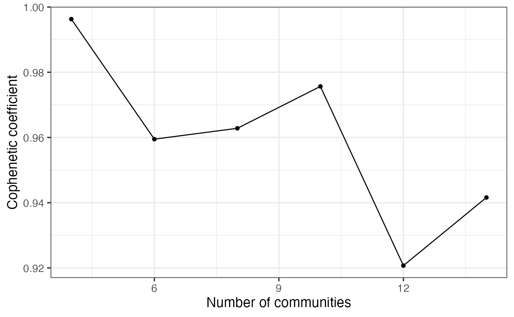

Discovery of Spatial Ecotypes from Multiple Samples
Source:vignettes/Integration.Rmd
Integration.RmdOverview
In this tutorial, we will illustrate how to identify conserved spatial ecotypes (SEs) across multiple samples using the MultiSpatialEcoTyper function. Each sample represents a single-cell spatial transcriptomics data, including a gene expression profile and associated single-cell metadata.
We will be analyzing single-cell spatial transcriptomics data from
cancer samples provided by Vizgen’s MERSCOPE FFPE
Human Immuno-oncology. For efficiency, we have selected a subset of
regions from a melanoma sample and a colon cancer sample for the
integrative analysis. You can download the gene expression profiles and
single-cell metadata here.
The melanoma sample includes spatial expression data for 500 genes across 27,907 cells, while the colon cancer sample contains data for 38,080 cells. In both samples, cells were categorized into ten distinct cell types: B cells, CD4+ T cells, CD8+ T cells, NK cells, plasma cells, macrophages, dendritic cells (DC), fibroblasts, endothelial cells, and cancer cells. Cancer cells are excluded from this demonstration to reduce processing time.
All cells are grouped into four spatial regions: tumor, inner margin, outer margin, and stroma. The tumor and stroma regions are defined based on the density of cancer cells, as described in the CytoSPACE paper. The inner and outer margins are defined as regions extending 250 μm inside and outside the tumor boundaries, respectively. Furthermore, we quantified each cell’s distance to the tumor–stroma interface by calculating the shortest Euclidean distance to the nearest tumor region (for stromal cells) or stromal region (for tumor cells). A positive distance indicates cells located within the tumor region, while a negative distance indicates cells located within the stroma.
First load required packages for this vignette
suppressPackageStartupMessages(library(dplyr))
suppressPackageStartupMessages(library(ggplot2))
suppressPackageStartupMessages(library(parallel))
suppressPackageStartupMessages(library(Seurat))
suppressPackageStartupMessages(library(data.table))
suppressPackageStartupMessages(library(googledrive))
suppressPackageStartupMessages(library(NMF))
suppressPackageStartupMessages(library(ComplexHeatmap))
library(SpatialEcoTyper)Loading data
Spatial EcoTyper analysis requires two input data for each sample:
- gene expression matrix: rows represent gene names and columns represent cell IDs
- meta data: a data frame with at least three columns, including “X” (X-coordinate), “Y” (Y-coordinate), and “CellType” (cell type annotation). The row names of the meta data should match the column names (cell IDs) in the expression matrix.
Text files as input
First, download the demo data from Google Drive
drive_deauth() # Disable Google sign-in requirement
drive_download(as_id("1CoQmU3u8MoVC8RbLUvTDQmOuJJ703HHB"), "HumanMelanomaPatient1_subset_counts.tsv.gz", overwrite = TRUE)
drive_download(as_id("1CgUOQKrWY_TG61o5aw7J9LZzE20D6NuI"), "HumanMelanomaPatient1_subset_scmeta.tsv", overwrite = TRUE)
drive_download(as_id("1ChwONUjr_yoURodnkDBj68ZUbjdHtmP6"), "HumanColonCancerPatient2_subset_counts.tsv.gz", overwrite = TRUE)
drive_download(as_id("1CipRjjD7cqzqKO0Yf4LUdsEw1XDzP6JS"), "HumanColonCancerPatient2_subset_scmeta.tsv", overwrite = TRUE)Then, load text files into R. You can use read.table for
small files or data.table::fread for larger files.
# Load single-cell metadata
# Row names should be cell ids. Required columns: X, Y, CellType;
# Recommend a 'Region' column if pathologist region annotations are available
scmeta1 <- read.table("HumanMelanomaPatient1_subset_scmeta.tsv",
sep = "\t", header = TRUE, row.names = 1)
scmeta2 <- read.table("HumanColonCancerPatient2_subset_scmeta.tsv",
sep = "\t", header = TRUE, row.names = 1)
head(scmeta1[, c("X", "Y", "CellType", "Region")])## X Y CellType Region
## HumanMelanomaPatient1__cell_3655 1894.706 -6367.766 Fibroblast Stroma
## HumanMelanomaPatient1__cell_3657 1942.480 -6369.602 Fibroblast Stroma
## HumanMelanomaPatient1__cell_3658 1963.007 -6374.026 Fibroblast Stroma
## HumanMelanomaPatient1__cell_3660 1981.600 -6372.266 Fibroblast Stroma
## HumanMelanomaPatient1__cell_3661 1742.939 -6374.851 Fibroblast Stroma
## HumanMelanomaPatient1__cell_3663 1921.683 -6383.309 Fibroblast Stroma## X Y CellType Region
## HumanColonCancerPatient2__cell_1085 5057.912 -1721.871 Macrophage Inner margin
## HumanColonCancerPatient2__cell_1205 5035.339 -1783.352 Macrophage Inner margin
## HumanColonCancerPatient2__cell_1312 5012.093 -1908.390 Macrophage Inner margin
## HumanColonCancerPatient2__cell_1625 5073.743 -1861.740 Macrophage Inner margin
## HumanColonCancerPatient2__cell_1629 5030.235 -1867.441 Macrophage Inner margin
## HumanColonCancerPatient2__cell_1639 5020.448 -1882.751 Macrophage Inner margin
# Load single-cell gene expression data. Rows represent gene names and columns represent cell IDs
scdata1 <- fread("HumanMelanomaPatient1_subset_counts.tsv.gz",
sep = "\t",header = TRUE, data.table = FALSE)
rownames(scdata1) <- scdata1[, 1] # Setting the first column as row names
scdata1 <- as.matrix(scdata1[, -1]) # Dropping first column
scdata2 <- fread("HumanColonCancerPatient2_subset_counts.tsv.gz",
sep = "\t",header = TRUE, data.table = FALSE)
rownames(scdata2) <- scdata2[, 1] # Setting the first column as row names
scdata2 <- as.matrix(scdata2[, -1]) # Dropping first column
head(scdata1[,1:5])## HumanMelanomaPatient1__cell_3655 HumanMelanomaPatient1__cell_3657
## PDK4 0 1
## TNFRSF17 0 0
## ICAM3 0 0
## FAP 1 0
## GZMB 0 0
## TSC2 0 0
## HumanMelanomaPatient1__cell_3658 HumanMelanomaPatient1__cell_3660
## PDK4 1 0
## TNFRSF17 0 0
## ICAM3 0 0
## FAP 0 0
## GZMB 0 0
## TSC2 0 0
## HumanMelanomaPatient1__cell_3661
## PDK4 0
## TNFRSF17 0
## ICAM3 0
## FAP 0
## GZMB 0
## TSC2 0
head(scdata2[,1:5])## HumanColonCancerPatient2__cell_1085 HumanColonCancerPatient2__cell_1205
## PDK4 0 0
## CCL26 0 0
## CX3CL1 0 0
## PGLYRP1 0 0
## CD4 0 0
## SNAI2 0 0
## HumanColonCancerPatient2__cell_1312 HumanColonCancerPatient2__cell_1625
## PDK4 1 0
## CCL26 0 0
## CX3CL1 0 0
## PGLYRP1 0 0
## CD4 0 0
## SNAI2 0 0
## HumanColonCancerPatient2__cell_1629
## PDK4 0
## CCL26 0
## CX3CL1 0
## PGLYRP1 0
## CD4 0
## SNAI2 0Sparse matrix as input
Mtx files can be loaded into R using the ReadMtx
function from the Seurat package.
drive_download(as_id("13M3xhRxp0xK9gf5F4DE9idSBFqVQIXDT"), "HumanMelanomaPatient1_subset_counts.mtx.gz", overwrite = TRUE)
drive_download(as_id("136feRaFjMtNvduLTm5xqa3WhyyoG4Xzo"), "HumanMelanomaPatient1_subset_cells.tsv.gz", overwrite = TRUE)
drive_download(as_id("13QprWzJhzzUy_w3XSrjlt9pjf2n-G7HV"), "HumanMelanomaPatient1_subset_genes.tsv.gz", overwrite = TRUE)
drive_download(as_id("17fH9BAAugYi1FMLrMuTxojtOoklFBB-K"), "HumanColonCancerPatient2_subset_counts.mtx.gz", overwrite = TRUE)
drive_download(as_id("17a1f1VjxJSje_uyPt6zA97zTps9ko6rk"), "HumanColonCancerPatient2_subset_cells.tsv.gz", overwrite = TRUE)
drive_download(as_id("17fH0jE5b2YqJ5fpQtYil27k-7YhzArD6"), "HumanColonCancerPatient2_subset_genes.tsv.gz", overwrite = TRUE)
scdata1 <- ReadMtx(mtx = "HumanMelanomaPatient1_subset_counts.mtx.gz", cells = "HumanMelanomaPatient1_subset_cells.tsv.gz", features = "HumanMelanomaPatient1_subset_genes.tsv.gz", feature.column = 1, cell.column = 1)
scdata2 <- ReadMtx(mtx = "HumanColonCancerPatient2_subset_counts.mtx.gz", cells = "HumanColonCancerPatient2_subset_cells.tsv.gz", features = "HumanColonCancerPatient2_subset_genes.tsv.gz", feature.column = 1, cell.column = 1)Data normalization
Gene expression data should be normalized for the
SpatialEcoTyper analysis. This can be achieved using either
NormalizeData
or SCTransform.
Alternatively, you may skip this step and allow the MultiSpatialEcoTyper
function to handle normalization by specifying the desired method (e.g.,
SCT) in the normalization.method argument.
Using SCTransform for the normalization:
For faster computation, it is recommended to install the
glmGamPoi package for the SCTransform
normalization.
## Install the glmGamPoi package
if(!"glmGamPoi" %in% installed.packages()){
BiocManager::install("glmGamPoi")
}
## Data normalization
tmpobj1 <- CreateSeuratObject(scdata1) %>%
SCTransform(clip.range = c(-10, 10), verbose = FALSE)
tmpobj2 <- CreateSeuratObject(scdata2) %>%
SCTransform(clip.range = c(-10, 10), verbose = FALSE)
## Extract the normalized gene expression data
seurat_version = as.integer(gsub("\\..*", "", as.character(packageVersion("SeuratObject"))))
if(seurat_version<5){
normdata1 <- GetAssayData(tmpobj1, "data")
normdata2 <- GetAssayData(tmpobj2, "data")
}else{
normdata1 <- tmpobj1[["SCT"]]$data
normdata2 <- tmpobj2[["SCT"]]$data
}Using NormalizeData for the normalization:
normdata1 <- NormalizeData(scdata1)
normdata2 <- NormalizeData(scdata2)Preview of the samples
The SpatialView function can be used to visualize single cells within the tissue. You can color the cells by cell type or predefined spatial regions.
# Visualize the cell type annotations in the tissue
p1 <- SpatialView(scmeta1, by = "CellType") + labs(title = "SKCM") +
scale_color_manual(values = pals::cols25()) + theme(legend.position = "none")
p2 <- SpatialView(scmeta2, by = "CellType") + labs(title = "CRC") +
scale_color_manual(values = pals::cols25())
p1 + p2
# Visualize the regions in the tissue
p1 <- SpatialView(scmeta1, by = "Region") + labs(title = "SKCM") +
scale_color_brewer(type = "qual", palette = "Set1") +
theme(legend.position = "none")
p2 <- SpatialView(scmeta2, by = "Region") + labs(title = "CRC") +
scale_color_brewer(type = "qual", palette = "Set1")
p1 + p2
The SpatialView function can also be used to visualize continuous characteristics, such as the minimum distance of each single cell to tumor/stroma margin. Here, positive distances indicate cells located within the tumor region, while negative distances denote cells within the stroma.
# Visualize the distance to tumor margin
p1 <- SpatialView(scmeta1, by = "Dist2Interface") + labs(title = "SKCM") +
scale_colour_gradient2(low = "#5e3c99", high = "#e66101", mid = "#d9d9d9", midpoint = 0) +
theme(legend.position = "none")
p2 <- SpatialView(scmeta2, by = "Dist2Interface") + labs(title = "CRC") +
scale_colour_gradient2(low = "#5e3c99", high = "#e66101", mid = "#d9d9d9", midpoint = 0) + labs(color = "Distance to\ntumor margin")
p1 + p2
## Visualize gene expression in the tissue
gg <- scmeta1
gg$Expression <- normdata1["STAT1", ]
p1 <- SpatialView(gg, by = "Expression") +
scale_color_viridis_c() + labs(color = "STAT1")
gg <- scmeta2
gg$Expression <- normdata2["STAT1", ]
p2 <- SpatialView(gg, by = "Expression") +
scale_color_viridis_c() + labs(color = "STAT1")
p1 + p2
Spatial EcoTyper analysis across multiple samples

The MultiSpatialEcoTyper function enables the integration of single-cell spatial transcriptomics data across multiple samples, facilitating the identification of SEs shared across samples or cancer types. The analysis is performed in three stages:
- Independent Spatial EcoTyper Analysis: Spatial EcoTyper analysis is performed on each single-cell ST sample to identify spatial neighborhood clusters.
- Integration via Similarity Network Fusion: The spatial clusters from individual samples are represented by gene expression profiles (GEPs) of their associated cell states. These cell type–specific GEPs are integrated using Similarity Network Fusion (Wang et al., 2014), producing a unified similarity network of spatial clusters across all samples.
- NMF Clustering: Non-negative Matrix Factorization (NMF) is applied to the unified network embedding to identify conserved SEs across samples.
Key arguments for MultiSpatialEcoTyper
-
data_listA named list of expression matrices where each matrix represents gene expression data for a sample. The columns of each matrix correspond to cells, and the rows correspond to genes. The list names should match sample names; otherwise, samples will be named as ‘Sample1’, ‘Sample2’, etc. -
metadata_listA named list of metadata data frames, where each data frame contains metadata corresponding to the cells in the expression matrices. Each metadata data frame should include at least three columns (X, Y, CellType), and the row names should match the cell IDs (column names) in the expression matrix. -
outdirDirectory where the results will be saved. Defaults to the current directory with a subdirectory named “SpatialEcoTyper_results_” followed by the current date. -
normalization.methodMethod for normalizing the expression data. Options include “None” (default), “SCT”, or other methods compatible with Seurat’sNormalizeDatafunction. -
nmf_ranksInteger or vector specifying the number of clusters (10 by default). If a vector is provided, the function tests all ranks and selects the optimal rank for NMF, though this may increase computation time. -
radiusNumeric specifying the radius (in the same units as spatial coordinates) for defining spatial neighborhoods around each cell. Default is 50. -
minibatchInteger specifying the number of columns (default: 5000) to process in each minibatch in the SNF analysis. This option splits the matrix into smaller chunks, thus reducing memory usage. -
ncoresInteger specifying the number of cores for parallel processing (default: 1).
You can type ?MultiSpatialEcoTyper to visualize the full
manual.
Important note: In the examples below, we will use
10 clusters and 5 runs per rank for demonstration purposes. To select
the optimal number of clusters and obtain robust results, you can use
the nmf_ranks argument with a vector of integers to test
multiple ranks for NMF analysis. You can also use the nmfClustering function for
the rank selection, as outlined in the next section
(NMF clustering for SpatialEcoTyper).
Pathologist region annotation unavailable
MultiSpatialEcoTyper analysis (without region annotation)
MultiSpatialEcoTyper(data_list, metadata_list,
normalization.method = "None", # Normalization method
nmf_ranks = 10, # Number of clusters
nrun.per.rank = 5, # Recommend 30 or higher for robust results
ncores = 2)
# This demo takes ~3 minutes on a macOS with an Apple M1 Pro chip and 16 GB memory.Pathologist region annotation available
If tumor and adjacent stroma region annotations are available, we
recommend to include the annotations in all metadata and specify the
Region in the MultiSpatialEcoTyper
function, which could improve integration accuracy.
## Annotation of tumor and stroma regions will be considered for the analysis.
metadata_list$SKCM$Region2 = metadata_list$SKCM$Region
metadata_list$CRC$Region2 = metadata_list$CRC$Region
metadata_list$SKCM$Region2 = ifelse(metadata_list$SKCM$Dist2Interface<0, "Stroma", "Tumor")
metadata_list$CRC$Region2 = ifelse(metadata_list$CRC$Dist2Interface<0, "Stroma", "Tumor")
MultiSpatialEcoTyper(data_list, metadata_list,
normalization.method = "None", # Normalization method
min.cts.per.region = 2, # At least two cell types in each spatial neighborhood
nmf_ranks = 10, # Number of clusters
nrun.per.rank = 5, # Recommend 30 or higher for robust results
Region = "Region2", # Use pathologist annotations if available
ncores = 2)
## This demo takes ~3 minutes to complete on macOS with an Apple M1 Pro chip and 16 GB memory.Pathologist region annotation available (2)
You can specify the nmf_ranks argument with a vector of
integers to test multiple ranks, enabling the selection of the optimal
number of clusters.
## Annotation of tumor and stroma regions will be considered for the analysis.
metadata_list$SKCM$Region2 = metadata_list$SKCM$Region
metadata_list$CRC$Region2 = metadata_list$CRC$Region
metadata_list$SKCM$Region2 = ifelse(metadata_list$SKCM$Dist2Interface<0, "Stroma", "Tumor")
metadata_list$CRC$Region2 = ifelse(metadata_list$CRC$Dist2Interface<0, "Stroma", "Tumor")
MultiSpatialEcoTyper(data_list, metadata_list,
normalization.method = "None", # Normalization method
nmf_ranks = seq(4,15,2), # Number of clusters
nrun.per.rank = 30, # 30 runs per rank for robust results
Region = "Region2", # Use pathologist annotations
ncores = 2)
## This demo takes ~16 minutes to complete on macOS with an Apple M1 Pro chip and 16 GB memory.Using pre-existing Spatial EcoTyper results
If you’ve already run SpatialEcoTyper for each sample, you can integrate the results directly using IntegrateSpatialEcoTyper.
drive_download(as_id("1lAfzK6v1jnthjmPEHgcnQFKr-pRMSqRm"), "CRC_SpatialEcoTyper_results.rds", overwrite = TRUE)
drive_download(as_id("1dPtmNrH0piUbzB_tltYkD-AoXLvf6P3Q"), "SKCM_SpatialEcoTyper_results.rds", overwrite = TRUE)
data_list <- list(SKCM = normdata1, CRC = normdata2)
SpatialEcoTyper_list <- list(SKCM = readRDS("SKCM_SpatialEcoTyper_results.rds"),
CRC = readRDS("CRC_SpatialEcoTyper_results.rds"))
IntegrateSpatialEcoTyper(SpatialEcoTyper_list, data_list,
outdir = "SpatialEcoTyper_results/",
normalization.method = "None",
nmf_ranks = 10, # Number of clusters
nrun.per.rank = 5, # recommend 30 or higher for robust results
Region = "Region2", # Use pathologist annotations if available
ncores = 2)
# This demo takes ~3 minutes on a macOS with an Apple M1 Pro chip and 16 GB memory.Optimizing memory usage
For large single-cell spatial transcriptomics (ST) datasets with more
than 100,000 cells, the analysis can be both time- and memory-intensive.
To accelerate computation, you can increase the number of cores used
(ncores), but this will also increase memory
consumption.
If computational memory is limited, several strategies can help
reduce usage. One option is to increase the grid.size,
which decreases the number of spatial neighborhoods and can
substantially decrease memory usage. Another option is to reduce the
minibatch size and the number of cores
(ncores). However, the minimum memory requirement may still
remain high for very large datasets.
Interested in multicellular communities associated with specific cell types?
If you’re interested in studying multicellular communities associated
with specific cell types, you can use the
filter.region.by.celltypes argument to restrict the
analysis to spatial neighborhoods that include at least one cell of the
specified types. An example is available in Discovery of Spatial Ecotypes from a Single
Sample.
Interested in regions with multiple cell types?
If you’re interested in regions composed of multiple cell types, you
can use the min.cts.per.region argument to restrict the
analysis to spatial neighborhoods containing at least the specified
minimum number of distinct cell types.
Output results
All results will be saved in the specified directory
(outdir) with a subdirectory named
SpatialEcoTyper_results_ followed by the current date. The
output files include:
-
(SampleName)_SpatialEcoTyper_results.rdsSpatialEcoTyperresult for each sample. - MultiSE_integrated_final.rds A matrix representing the fused similarity matrix of spatial clusters across all samples.
- MultiSE_integrated_final_hmap.pdf A heatmap visualizing the fused similarity matrix of spatial clusters, grouped by samples and SEs.
- MultiSE_metadata_final.rds Single-cell metadata with an ‘SE’ column annotating the discovered SEs, saved as an RDS file.
-
MultiSE_metadata_final.tsv The same as
MultiSE_metadata_final.rds, but saved in TSV format. - SpatialView_SEs_by_Sample.pdf A figure showing the spatial landscape of SEs across samples.
- BarView_SEs_Sample_Frac.pdf A bar plot showing the fraction of cells from each sample represented within each SE.
- BarView_SEs_Region_Frac_Avg.pdf A bar plot showing the average fraction of regions represented within each SE.
- BarView_SEs_CellType_Frac_Avg.pdf A bar plot showing the average cell type composition within each SE.
-
MultiSE_NMF_results.rds The NMF result derived from
the
nmfClusteringfunction. If a single rank was provided, it contains anNMFfitX1object . If multiple ranks were provided, it is alistcontaining the optimal number of communities (bestK), a list ofNMFfitX1objects (NMFfits), and aggplotobject (p) displaying the cophenetic coefficient for different cluster numbers. - MultiSE_NMF_Cophenetic_Dynamics.pdf A figure showing the cophenetic coefficients for different numbers of clusters, only available when multiple ranks were provided.
The results for the demo data can be downloaded from MultiSpatialEcoTyper_results.
NMF clustering
Spatial EcoTyper uses NMF to group spatial clusters from multiple samples into conserved SEs. To determine the optimal number of clusters, or rank, we computed cophenetic coefficient, which quantifies the classification stability for a given rank (i.e., the number of clusters) and ranges from 0 to 1, with 1 indicating maximally stability. Typically, the rank at which the cophenetic coefficient begins to decrease is chosen. However, this method can be challenging when the cophenetic coefficient exhibits a multi-modal shape across different ranks. In such cases, for Spatial EcoTyper analysis, we recommend selecting the number of SEs after which the coefficient drops below 0.95 by default.
Selecting the optimal rank
To determine the optimal rank, you can use the nmfClustering function, which
tests multiple ranks and computes the cophenetic coefficient for each.
This analysis requires the fused similarity network matrix
(MultiSE_integrated_final.rds) generated from previous
step.
Load the files into R:
## Fused similarity matrix of spatial clusters across all samples
outdir = paste0("SpatialEcoTyper_results_", Sys.Date())
integrated = readRDS(file.path(outdir, "MultiSE_integrated_final.rds"))
dim(integrated)## [1] 382 382
## Single-cell metadata with an 'SE' column annotating the discovered SEs
finalmeta = readRDS(file.path(outdir, "MultiSE_metadata_final.rds"))
head(finalmeta[, c("Sample", "X", "Y", "CellType", "Region", "InitSE", "SE")])## Sample X Y CellType Region
## HumanMelanomaPatient1__cell_3655 SKCM 1894.706 -6367.766 Fibroblast Stroma
## HumanMelanomaPatient1__cell_3657 SKCM 1942.480 -6369.602 Fibroblast Stroma
## HumanMelanomaPatient1__cell_3658 SKCM 1963.007 -6374.026 Fibroblast Stroma
## HumanMelanomaPatient1__cell_3660 SKCM 1981.600 -6372.266 Fibroblast Stroma
## HumanMelanomaPatient1__cell_3661 SKCM 1742.939 -6374.851 Fibroblast Stroma
## HumanMelanomaPatient1__cell_3663 SKCM 1921.683 -6383.309 Fibroblast Stroma
## InitSE SE
## HumanMelanomaPatient1__cell_3655 SKCM..InitSE119 SE2
## HumanMelanomaPatient1__cell_3657 SKCM..InitSE124 SE4
## HumanMelanomaPatient1__cell_3658 SKCM..InitSE124 SE4
## HumanMelanomaPatient1__cell_3660 SKCM..InitSE124 SE4
## HumanMelanomaPatient1__cell_3661 SKCM..InitSE90 SE1
## HumanMelanomaPatient1__cell_3663 SKCM..InitSE119 SE2Next, test multiple ranks to find the optimal number of SEs. The running time for this step depends on the data size, number of ranks to test, the number of runs per rank, and the number of cores for parallel analysis. For demonstration, here we test six different ranks ranging from 4 to 15 with 5 runs per rank.
nmf_res <- nmfClustering(integrated, ranks = seq(4,15,2),
nrun.per.rank = 5, # Recommend 30 or higher
min.coph = 0.99, # minimum cophenetic coefficient threshold
ncores = 4,
seed = 2024)
## This process takes ~3 minutes on a macOS with an Apple M1 Pro chip and 16 GB of memory
paste0("The selected rank is ", nmf_res$bestK)## [1] "The selected rank is 4"To better understand how the cophenetic coefficient changes with different ranks, you can visualize the results.
plot(nmf_res$p)
Once the optimal rank is determined, you can use it to generate the final SE annotations.
## SKCM..InitSE101 CRC..InitSE3 CRC..InitSE187 CRC..InitSE181 SKCM..InitSE90
## 4 3 4 2 4
## SKCM..InitSE28
## 4
## Levels: 1 2 3 4You can add the newly defined SEs into the meta data:
## CID X
## HumanMelanomaPatient1__cell_3655 HumanMelanomaPatient1__cell_3655 1894.706
## HumanMelanomaPatient1__cell_3657 HumanMelanomaPatient1__cell_3657 1942.480
## HumanMelanomaPatient1__cell_3658 HumanMelanomaPatient1__cell_3658 1963.007
## HumanMelanomaPatient1__cell_3660 HumanMelanomaPatient1__cell_3660 1981.600
## HumanMelanomaPatient1__cell_3661 HumanMelanomaPatient1__cell_3661 1742.939
## HumanMelanomaPatient1__cell_3663 HumanMelanomaPatient1__cell_3663 1921.683
## Y CellType CellTypeName Region
## HumanMelanomaPatient1__cell_3655 -6367.766 Fibroblast Fibroblasts Stroma
## HumanMelanomaPatient1__cell_3657 -6369.602 Fibroblast Fibroblasts Stroma
## HumanMelanomaPatient1__cell_3658 -6374.026 Fibroblast Fibroblasts Stroma
## HumanMelanomaPatient1__cell_3660 -6372.266 Fibroblast Fibroblasts Stroma
## HumanMelanomaPatient1__cell_3661 -6374.851 Fibroblast Fibroblasts Stroma
## HumanMelanomaPatient1__cell_3663 -6383.309 Fibroblast Fibroblasts Stroma
## Dist2Interface Region2 InitSE Sample
## HumanMelanomaPatient1__cell_3655 -883.1752 Stroma SKCM..InitSE119 SKCM
## HumanMelanomaPatient1__cell_3657 -894.8463 Stroma SKCM..InitSE124 SKCM
## HumanMelanomaPatient1__cell_3658 -904.1115 Stroma SKCM..InitSE124 SKCM
## HumanMelanomaPatient1__cell_3660 -907.8909 Stroma SKCM..InitSE124 SKCM
## HumanMelanomaPatient1__cell_3661 -874.2712 Stroma SKCM..InitSE90 SKCM
## HumanMelanomaPatient1__cell_3663 -903.6559 Stroma SKCM..InitSE119 SKCM
## SE
## HumanMelanomaPatient1__cell_3655 SE4
## HumanMelanomaPatient1__cell_3657 SE1
## HumanMelanomaPatient1__cell_3658 SE1
## HumanMelanomaPatient1__cell_3660 SE1
## HumanMelanomaPatient1__cell_3661 SE4
## HumanMelanomaPatient1__cell_3663 SE4Using a different rank
If you simply want to experiment with a different rank, you can use the nmfClustering function. When a single rank is specified, it directly returns an NMFfit object for predicting SE grouping, as shown below:
nmf_res <- nmfClustering(integrated, ranks = 10, nrun.per.rank = 30,
seed = 1, ncores = 1)
ses <- predict(nmf_res)
## This process takes ~6 minutes on a macOS with an Apple M1 Pro chip and 16 GB of memoryYou can add the newly defined SEs into the meta data
## CID X
## HumanMelanomaPatient1__cell_3655 HumanMelanomaPatient1__cell_3655 1894.706
## HumanMelanomaPatient1__cell_3657 HumanMelanomaPatient1__cell_3657 1942.480
## HumanMelanomaPatient1__cell_3658 HumanMelanomaPatient1__cell_3658 1963.007
## HumanMelanomaPatient1__cell_3660 HumanMelanomaPatient1__cell_3660 1981.600
## HumanMelanomaPatient1__cell_3661 HumanMelanomaPatient1__cell_3661 1742.939
## HumanMelanomaPatient1__cell_3663 HumanMelanomaPatient1__cell_3663 1921.683
## Y CellType CellTypeName Region
## HumanMelanomaPatient1__cell_3655 -6367.766 Fibroblast Fibroblasts Stroma
## HumanMelanomaPatient1__cell_3657 -6369.602 Fibroblast Fibroblasts Stroma
## HumanMelanomaPatient1__cell_3658 -6374.026 Fibroblast Fibroblasts Stroma
## HumanMelanomaPatient1__cell_3660 -6372.266 Fibroblast Fibroblasts Stroma
## HumanMelanomaPatient1__cell_3661 -6374.851 Fibroblast Fibroblasts Stroma
## HumanMelanomaPatient1__cell_3663 -6383.309 Fibroblast Fibroblasts Stroma
## Dist2Interface Region2 InitSE Sample
## HumanMelanomaPatient1__cell_3655 -883.1752 Stroma SKCM..InitSE119 SKCM
## HumanMelanomaPatient1__cell_3657 -894.8463 Stroma SKCM..InitSE124 SKCM
## HumanMelanomaPatient1__cell_3658 -904.1115 Stroma SKCM..InitSE124 SKCM
## HumanMelanomaPatient1__cell_3660 -907.8909 Stroma SKCM..InitSE124 SKCM
## HumanMelanomaPatient1__cell_3661 -874.2712 Stroma SKCM..InitSE90 SKCM
## HumanMelanomaPatient1__cell_3663 -903.6559 Stroma SKCM..InitSE119 SKCM
## SE
## HumanMelanomaPatient1__cell_3655 SE1
## HumanMelanomaPatient1__cell_3657 SE9
## HumanMelanomaPatient1__cell_3658 SE9
## HumanMelanomaPatient1__cell_3660 SE9
## HumanMelanomaPatient1__cell_3661 SE1
## HumanMelanomaPatient1__cell_3663 SE1Visualizing SEs
Visualizing the integrated similarity matrix
After reordering spatial clusters based on the newly identified SEs, you can re-draw the heatmap to show the fused similarity matrix of spatial clusters across samples.
ords = names(ses)[order(ses)]
integrated = integrated[ords, ords] # reorder the cells
ann <- data.frame(Sample = gsub("\\.\\..*", "", rownames(integrated)),
SE = paste0("SE", ses[ords]),
row.names = rownames(integrated)) # cell groups
SE_cols <- getColors(length(unique(ann$SE)), palette = 1) # colors for SEs
names(SE_cols) <- unique(ann$SE)
sample_cols <- getColors(length(unique(ann$Sample)), palette = 2) # colors for samples
names(sample_cols) <- unique(ann$Sample)
## draw heatmap
HeatmapView(integrated, show_row_names = FALSE, show_column_names = FALSE,
top_ann = ann, top_ann_col = list(Sample = sample_cols, SE = SE_cols))
drawRectangleAnnotation(ann$SE, ann$SE)Visualizing SEs in the tissue
The spatial distribution of SEs within the tissue can be visualized using the SpatialView function.
SpatialView(finalmeta, by = "SE") + facet_wrap(~Sample, scales = "free")Association between SEs and pre-annotated regions
This bar plot shows the enrichment of SEs in pre-defined regions (e.g., tumor and stroma).
gg <- finalmeta %>% filter(!is.na(SE)) %>% count(SE, Region, Sample) %>%
group_by(Sample, SE) %>% mutate(Frac = n / sum(n)) %>% ## cell type fractions within each sample
group_by(SE, Region) %>% summarise(Frac = mean(Frac)) ## average cell type fractions across all samples
ggplot(gg, aes(SE, Frac, fill = Region)) +
geom_bar(stat = "identity", position = "fill") +
scale_fill_brewer(type = "qual", palette = "Set1") +
theme_bw(base_size = 14) + coord_flip() +
labs(y = "Fraction")Association between SEs and pre-annotated regions within each sample
gg <- finalmeta %>% filter(!is.na(SE)) %>% count(SE, Region, Sample)
ggplot(gg, aes(SE, n, fill = Region)) +
geom_bar(stat = "identity", position = "fill") +
scale_fill_brewer(type = "qual", palette = "Set1") +
facet_wrap(~Sample) +
theme_bw(base_size = 14) + coord_flip() +
labs(y = "Fraction of regions")Distance of SEs to tumor/stroma interface
This box plot visualizes the distribution of distances of SEs to the tumor/stroma interface. Positive distances indicate cells located within the tumor region, while negative distances denote cells within the stroma. The SEs are ordered by their median distance, highlighting their spatial localization relative to the tumor/stroma interface.
gg <- finalmeta %>% filter(!is.na(SE)) %>% group_by(Sample, SE) %>%
summarise(Dist2Interface = mean(Dist2Interface)) %>% arrange(Dist2Interface)
gg$SE = factor(gg$SE, levels = unique(gg$SE))
ggplot(gg, aes(SE, Dist2Interface)) + geom_boxplot() +
geom_point(aes(color = Sample)) + theme_bw() +
labs(y = "Distance to tumor/stroma interface (μm)")Cell type composition of SEs
We can visualize the cell type composition of SEs in a bar plot. The cell type fractions can be averaged across the two samples.
Average cell type composition of SEs across all samples
gg <- finalmeta %>% filter(!is.na(SE)) %>% count(SE, CellType, Sample) %>%
group_by(Sample, SE) %>% mutate(Frac = n / sum(n)) %>% ## cell type fractions within each sample
group_by(SE, CellType) %>% summarise(Frac = mean(Frac)) ## average cell type fractions across all samples
ggplot(gg, aes(SE, Frac, fill = CellType)) +
geom_bar(stat = "identity", position = "fill") +
scale_fill_manual(values = pals::cols25()) +
theme_bw(base_size = 14) + coord_flip() +
labs(y = "Cell type abundance")Cell type composition of SEs within each sample
gg <- finalmeta %>% filter(!is.na(SE)) %>% count(SE, CellType, Sample)
ggplot(gg, aes(SE, n, fill = CellType)) +
geom_bar(stat = "identity", position = "fill") +
scale_fill_manual(values = pals::cols25()) +
facet_wrap(~Sample) +
theme_bw(base_size = 14) + coord_flip() +
labs(y = "Cell type abundance")Identification of cell-type-specific SE markers
You can identify cell-type-specific SE markers by differential
expression analysis using the presto
package. Below is an example of how to identify fibroblast-specific
markers for each SE.
DE analysis within each sample
require("presto")
## DE analysis within the first sample
tmpmeta1 = finalmeta %>% filter(CellType=="Fibroblast" & Sample=="SKCM" & (!is.na(SE)))
tmpdata1 = normdata1[, tmpmeta1$CID]
degs1 = wilcoxauc(tmpdata1, tmpmeta1$SE)
## DE analysis within the second sample
tmpmeta2 = finalmeta %>% filter(CellType=="Fibroblast" & Sample=="CRC" & (!is.na(SE)))
tmpdata2 = normdata2[, tmpmeta2$CID]
degs2 = wilcoxauc(tmpdata2, tmpmeta2$SE) # DE analysis
head(degs1)## feature group avgExpr logFC statistic auc pval
## 1 PDK4 SE1 0.091576121 0.020090417 7082776 0.5129805 3.383164e-04
## 2 TNFRSF17 SE1 0.000000000 0.000000000 6903552 0.5000000 1.000000e+00
## 3 ICAM3 SE1 0.000000000 0.000000000 6903552 0.5000000 1.000000e+00
## 4 FAP SE1 0.156625101 0.033042269 7188720 0.5206537 7.952255e-06
## 5 GZMB SE1 0.010805560 -0.004872202 6867510 0.4973896 1.040726e-01
## 6 TSC2 SE1 0.008238497 -0.001008089 6892560 0.4992039 5.593389e-01
## padj pct_in pct_out
## 1 9.747298e-04 11.683992 9.075074
## 2 1.000000e+00 0.000000 0.000000
## 3 1.000000e+00 0.000000 0.000000
## 4 2.762818e-05 20.332640 16.286361
## 5 2.264222e-01 1.413721 1.933461
## 6 1.000000e+00 1.164241 1.323811
head(degs2)## feature group avgExpr logFC statistic auc pval
## 1 PDK4 SE1 0.26293130 0.15386775 26420387 0.5710490 7.485363e-96
## 2 CX3CL1 SE1 0.02111851 -0.03153237 22256590 0.4810529 7.455819e-19
## 3 CD4 SE1 0.00000000 0.00000000 23133204 0.5000000 1.000000e+00
## 4 SNAI2 SE1 0.15037678 -0.14058069 19939418 0.4309696 4.592867e-59
## 5 TNFRSF17 SE1 0.00000000 0.00000000 23133204 0.5000000 1.000000e+00
## 6 ICAM3 SE1 0.00000000 0.00000000 23133204 0.5000000 1.000000e+00
## padj pct_in pct_out
## 1 7.342785e-95 26.384452 12.696866
## 2 2.925521e-18 2.662407 6.445852
## 3 1.000000e+00 0.000000 0.000000
## 4 3.570304e-58 18.636848 31.328138
## 5 1.000000e+00 0.000000 0.000000
## 6 1.000000e+00 0.000000 0.000000Identifying conserved markers across samples
To identify markers conserved across different samples, we conduct a meta-analysis by averaging the log2 fold changes (log2FC) from the DE analyses.
library(tidyr)
degs <- merge(degs1[, c(1,2,4)], degs2[, c(1,2,4)], by = c("feature", "group"))
degs$AvgLogFC = (degs$logFC.x + degs$logFC.y) / 2
lfcs = degs %>% pivot_wider(id_cols = feature, names_from = group,
values_from = AvgLogFC) %>% as.data.frame
rownames(lfcs) <- lfcs$feature
lfcs <- lfcs[, -1]
head(lfcs)## SE1 SE10 SE3 SE4 SE5
## ACKR3 0.202319667 -0.16681622 0.173747530 -0.077484816 -0.1187778732
## ACTA2 -0.007986156 -0.11258030 -0.273799424 -0.162699871 0.0508610726
## ADAMTS4 -0.121780777 0.19380073 -0.017353207 0.212403413 0.0008890585
## AKT1 -0.178304434 0.30378513 -0.128981441 0.058065881 0.0767991366
## AKT2 0.011387017 0.01573604 0.032909848 -0.004577946 -0.0068134383
## AKT3 0.001628538 0.03362950 -0.008176783 -0.009241687 -0.0407208958
## SE6 SE7 SE8 SE9
## ACKR3 -0.16642387 0.007585438 -0.03132710 3.915494e-02
## ACTA2 -0.13389836 0.030590690 0.13696010 1.088713e+00
## ADAMTS4 0.09293071 -0.051010370 -0.10530806 3.177062e-05
## AKT1 0.33741592 -0.040769817 -0.12883360 -3.681429e-02
## AKT2 0.01485895 0.001213957 -0.03099852 -2.780471e-04
## AKT3 0.01229041 -0.033060574 -0.07103733 1.172572e-01To identify markers that are specific to each SE-associated cell state, we calculate the difference between the maximum log2FC for each gene and the second-highest log2FC:
secondmax = apply(lfcs, 1, function(x){ -sort(-x)[2] })
delta = lfcs - secondmax
## Markers are considered specific if they have a positive delta and a log2FC greater than 0.05:
idx = delta>0 & lfcs>0.05
markers = lapply(colnames(lfcs), function(se){
gs = rownames(idx)[idx[, se]]
gs = gs[order(-lfcs[gs, se])]
gs
})
names(markers) = colnames(lfcs)
markers = markers[lengths(markers)>0]
## Select the top five markers
top5 = lapply(markers, function(x){ x[1:min(5, length(x))] })
top5## $SE1
## [1] "FOS" "PLA2G2A" "DUSP1" "SFRP2" "EGR1"
##
## $SE10
## [1] "BST2" "HLA-DRA" "HLA-B" "STAT1" "TAP2"
##
## $SE3
## [1] "TGFBR3" "GPX3" "KITLG" "TCF7L2"
##
## $SE4
## [1] "CXCL9" "SOD2" "SERPINE1" "ADAMTS4" "NFKB2"
##
## $SE5
## [1] "FN1" "CSF1" "SERPINA1"
##
## $SE6
## [1] "PKM" "MMP11" "TGFBI" "CTNNB1" "YAP1"
##
## $SE7
## [1] "CXCR4" "XBP1" "PTPRC" "PDPN"
##
## $SE8
## [1] "COL1A1" "COL11A1" "COL5A1" "MFAP5" "CXCL2"
##
## $SE9
## [1] "ACTA2" "COL4A1" "MYH11" "TNC" "ITGB1"
Session info
The session info allows users to replicate the exact environment and identify potential discrepancies in package versions or configurations that might be causing problems.
## R version 4.4.1 (2024-06-14)
## Platform: aarch64-apple-darwin20
## Running under: macOS 15.6.1
##
## Matrix products: default
## BLAS: /Library/Frameworks/R.framework/Versions/4.4-arm64/Resources/lib/libRblas.0.dylib
## LAPACK: /Library/Frameworks/R.framework/Versions/4.4-arm64/Resources/lib/libRlapack.dylib; LAPACK version 3.12.0
##
## locale:
## [1] en_US.UTF-8/en_US.UTF-8/en_US.UTF-8/C/en_US.UTF-8/en_US.UTF-8
##
## time zone: America/Los_Angeles
## tzcode source: internal
##
## attached base packages:
## [1] grid parallel stats graphics grDevices utils datasets
## [8] methods base
##
## other attached packages:
## [1] tidyr_1.3.1 presto_1.0.0 Rcpp_1.0.13
## [4] pals_1.9 SpatialEcoTyper_1.0.1 RANN_2.6.2
## [7] Matrix_1.7-0 ComplexHeatmap_2.20.0 NMF_0.28
## [10] Biobase_2.64.0 BiocGenerics_0.50.0 cluster_2.1.6
## [13] rngtools_1.5.2 registry_0.5-1 googledrive_2.1.1
## [16] data.table_1.16.0 Seurat_5.1.0 SeuratObject_5.0.2
## [19] sp_2.1-4 ggplot2_3.5.1 dplyr_1.1.4
##
## loaded via a namespace (and not attached):
## [1] RcppAnnoy_0.0.22 splines_4.4.1
## [3] later_1.3.2 tibble_3.2.1
## [5] R.oo_1.26.0 polyclip_1.10-7
## [7] fastDummies_1.7.4 lifecycle_1.0.4
## [9] doParallel_1.0.17 globals_0.16.3
## [11] lattice_0.22-6 MASS_7.3-60.2
## [13] magrittr_2.0.3 plotly_4.10.4
## [15] sass_0.4.9 rmarkdown_2.28
## [17] jquerylib_0.1.4 yaml_2.3.10
## [19] httpuv_1.6.15 glmGamPoi_1.16.0
## [21] sctransform_0.4.1 spam_2.10-0
## [23] spatstat.sparse_3.1-0 reticulate_1.39.0
## [25] mapproj_1.2.11 cowplot_1.1.3
## [27] pbapply_1.7-2 RColorBrewer_1.1-3
## [29] maps_3.4.2 zlibbioc_1.50.0
## [31] abind_1.4-5 GenomicRanges_1.56.1
## [33] Rtsne_0.17 purrr_1.0.2
## [35] R.utils_2.12.3 GenomeInfoDbData_1.2.12
## [37] circlize_0.4.16 IRanges_2.38.1
## [39] S4Vectors_0.42.1 ggrepel_0.9.6
## [41] irlba_2.3.5.1 listenv_0.9.1
## [43] spatstat.utils_3.1-0 goftest_1.2-3
## [45] RSpectra_0.16-2 spatstat.random_3.3-1
## [47] fitdistrplus_1.2-1 parallelly_1.38.0
## [49] DelayedMatrixStats_1.26.0 pkgdown_2.1.0
## [51] DelayedArray_0.30.1 leiden_0.4.3.1
## [53] codetools_0.2-20 tidyselect_1.2.1
## [55] shape_1.4.6.1 farver_2.1.2
## [57] UCSC.utils_1.0.0 matrixStats_1.4.1
## [59] stats4_4.4.1 spatstat.explore_3.3-2
## [61] jsonlite_1.8.8 GetoptLong_1.0.5
## [63] progressr_0.14.0 ggridges_0.5.6
## [65] survival_3.6-4 iterators_1.0.14
## [67] systemfonts_1.1.0 foreach_1.5.2
## [69] tools_4.4.1 ragg_1.3.2
## [71] ica_1.0-3 glue_1.7.0
## [73] SparseArray_1.4.8 gridExtra_2.3
## [75] xfun_0.52 MatrixGenerics_1.16.0
## [77] GenomeInfoDb_1.40.1 withr_3.0.1
## [79] BiocManager_1.30.25 fastmap_1.2.0
## [81] fansi_1.0.6 digest_0.6.37
## [83] R6_2.5.1 mime_0.12
## [85] textshaping_0.4.0 colorspace_2.1-1
## [87] scattermore_1.2 tensor_1.5
## [89] dichromat_2.0-0.1 spatstat.data_3.1-2
## [91] R.methodsS3_1.8.2 utf8_1.2.4
## [93] generics_0.1.3 S4Arrays_1.4.1
## [95] httr_1.4.7 htmlwidgets_1.6.4
## [97] uwot_0.2.2 pkgconfig_2.0.3
## [99] gtable_0.3.5 lmtest_0.9-40
## [101] XVector_0.44.0 htmltools_0.5.8.1
## [103] dotCall64_1.1-1 clue_0.3-65
## [105] scales_1.3.0 png_0.1-8
## [107] spatstat.univar_3.0-1 knitr_1.48
## [109] rstudioapi_0.16.0 reshape2_1.4.4
## [111] rjson_0.2.22 nlme_3.1-164
## [113] curl_5.2.2 cachem_1.1.0
## [115] zoo_1.8-12 GlobalOptions_0.1.2
## [117] stringr_1.5.1 KernSmooth_2.23-24
## [119] miniUI_0.1.1.1 desc_1.4.3
## [121] pillar_1.9.0 vctrs_0.6.5
## [123] promises_1.3.0 xtable_1.8-4
## [125] evaluate_0.24.0 magick_2.8.5
## [127] cli_3.6.3 compiler_4.4.1
## [129] rlang_1.1.4 crayon_1.5.3
## [131] future.apply_1.11.2 labeling_0.4.3
## [133] plyr_1.8.9 fs_1.6.4
## [135] stringi_1.8.4 viridisLite_0.4.2
## [137] deldir_2.0-4 gridBase_0.4-7
## [139] munsell_0.5.1 lazyeval_0.2.2
## [141] spatstat.geom_3.3-2 RcppHNSW_0.6.0
## [143] patchwork_1.2.0 sparseMatrixStats_1.16.0
## [145] future_1.34.0 shiny_1.9.1
## [147] highr_0.11 SummarizedExperiment_1.34.0
## [149] ROCR_1.0-11 gargle_1.5.2
## [151] igraph_2.0.3 bslib_0.8.0